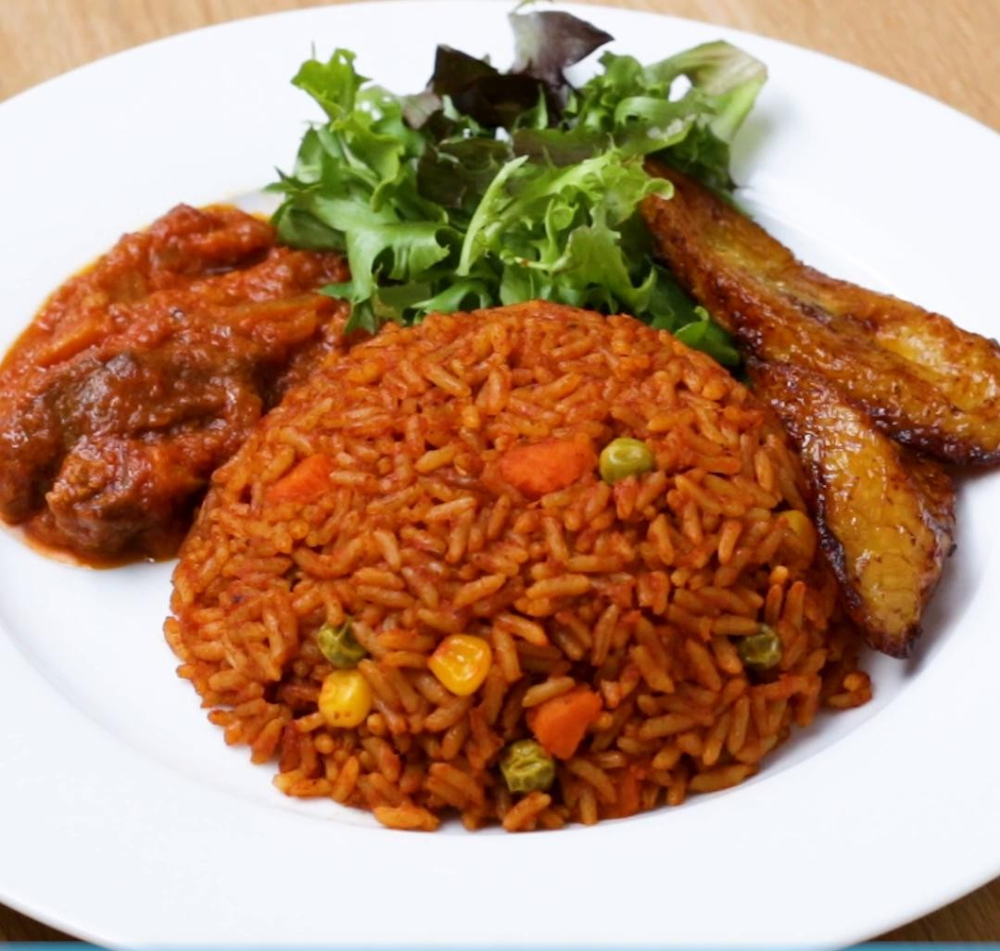

Jollof

Description
Jollof rice was at the heart of a controversy a few years ago, between Ghana and Nigeria, and later joined by Gambia, each claiming that the food originated from them. It is undoubtedly one of the most delicious meals you can find on the African contnent and even internationally.
It is prepared from rice cooked in a sauce, mostly tomato sauce, redish or yellowish in color and with a great taste!
Ingredients
- Rice
- Cooking Oil
- Water
- Tomato paste
- Pepper
- Onions
- Salt
Steps
- Heat the cooking oil in a sauce pan
- Add chopped onions and pepper
- Strir for about two minute and add some tomato paste
- Stir until the sauce iis well cooked
- Add salt and any seasoning to give the sauce the desired taste
- Add the desired quantity of rice
- Stir for about 30 seconds and add water
- Add salt and allow it cook until it is well cooked
- Serve it hot with some grilled chicken or meat. Enjoy!
Return to Homepage